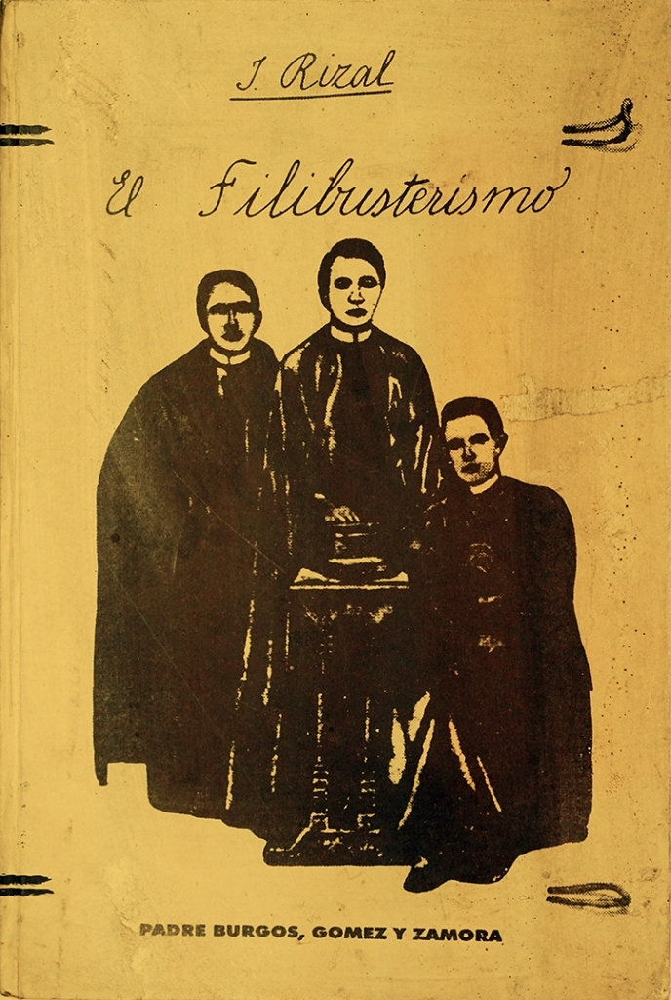

Ideas in print
Words that moved a nation
Rizal wrote novels and poetry that asked readers to look closely at injustice, identity, and hope.
01 / NOVEL
 Original cover, circa 1887 · Wikimedia Commons, public domain
Original cover, circa 1887 · Wikimedia Commons, public domain
Noli Me Tangere
A young Crisóstomo Ibarra returns home from Europe and finds his community shaped by corruption and abuse of power.
Main characters
Crisóstomo Ibarra, María Clara, Elias, and Padre Dámaso.
Why it matters
Published in 1887, the novel exposed social injustices in colonial Philippines and encouraged readers to demand reform.
02 / NOVEL

1891 facsimile cover · Wikimedia Commons, public domain
El Filibusterismo
This darker sequel follows Simoun, a wealthy jeweler who returns to Manila with a plan shaped by anger and loss.
Main characters
Simoun (the transformed Ibarra), Basilio, Isagani, and Paulita Gómez.
Why it matters
Published in 1891, it deepened Rizal’s critique of oppression and explored the dangers of revenge and violence.
03 / POEM
 Rizal, circa the 1890s · Wikimedia Commons, public domain
Rizal, circa the 1890s · Wikimedia Commons, public domain
Mi Último Adiós
A farewell poem expressing love for the Philippines, written shortly before Rizal’s execution.
Main characters
Not applicable: this is a lyric poem, with the speaker addressing the beloved homeland.
Why it matters
The poem became a moving statement of patriotism and sacrifice. It was shared after his death and remains widely remembered.